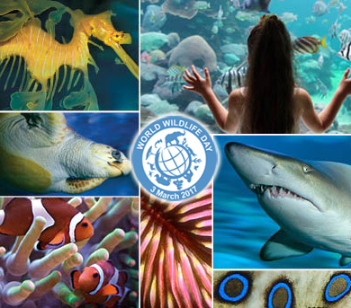

SUSTAINING ALL LIFE ON EARTH

|
On 20 December 2013, at its 68th session, the United Nations General Assembly (UNGA) proclaimed 3 March – the day of signature of the Convention on International Trade in Endangered Species of Wild Fauna and Flora (CITES) in 1973 – as UN World Wildlife Day to celebrate and raise awareness of the world’s wild animals and plants. The UNGA resolution also designated the CITES Secretariat as the facilitator for the global observance of this special day for wildlife on the UN calendar. World Wildlife Day has now become the most important global annual event dedicated to wildlife. World Wildlife Day will be celebrated in 2020 under the theme "Sustaining all Life on Earth", encompassing all wild animal and plant species as key components of the world's biodiversity. This aligns with UN Sustainable Development Goals 1, 12, 14 and 15, and their wide-ranging commitments on alleviating poverty, ensuring sustainable use of resources, and on conserving life both on land and below water to halt biodiversity loss. |
|
Earth is home to countless species of fauna and flora – too many to even attempt counting. This rich diversity, and the billions of years during which its myriad elements have interacted, are precisely what has made our planet inhabitable for all living creatures, including humans. Historically, we have depended on the constant interplay and interlinkages between all elements of the biosphere for all our needs: the air we breathe, the food we eat, the energy we use, and the materials we need for all purposes. However, unsustainable human activities and overexploitation of the species and natural resources that make up the habitats and ecosystems of all wildlife are imperiling the world’s biodiversity. Nearly a quarter of all species are presently at risk of going extinct in the coming decades, and their demise would only speed up the disappearance of countless others, putting us in danger as well. On World Wildlife Day 2020, we will celebrate the special place of wild plants and animals in their many varied and beautiful forms as a component of the world’s biological diversity. We will work to raise awareness of the multitude of benefits of wildlife to people, particularly to those communities who live in closest proximity to it, and we will discuss the threats they are facing and the urgent need for governments, civil society, private sector actors and individuals to add their voices and take actions to help conserve wildlife and ensure its continued use is sustainable. |
 |